A Collection of Vintage Greenlee
Woodworking Machinery
Cast iron and craft — thirteen machines spanning eight decades, restored and housed in two purpose-built timber frame workshops.
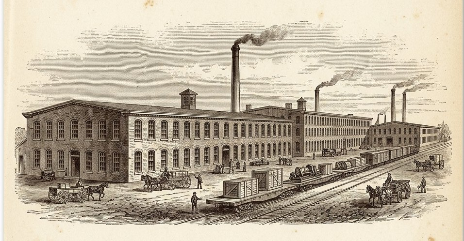
For more than a century, Greenlee Bros. & Co. of Rockford, Illinois built woodworking machinery of remarkable engineering and lasting beauty — machines cast heavy, built square, and meant to outlast the men who ran them. This is a personal collection of thirteen of those machines, gathered one at a time from mills, shop floors, and auction yards, and brought back to work in two timber frame buildings raised for the purpose. Nothing here is behind glass. The point of an old machine is that it still cuts.
Eight Decades of Iron
Every dated machine in the collection, from the hand-powered joinery of the 1890s to the last high-speed shapers of 1967. Select a marker to visit a machine.
Three more — the № 410 band saw, № 227 mortiser, and № 495s variety saw — are in the queue, their dates still under research.
The Collection
Ordered by year of manufacture. Photographs show each machine as it stands today — some restored, some just in the door.
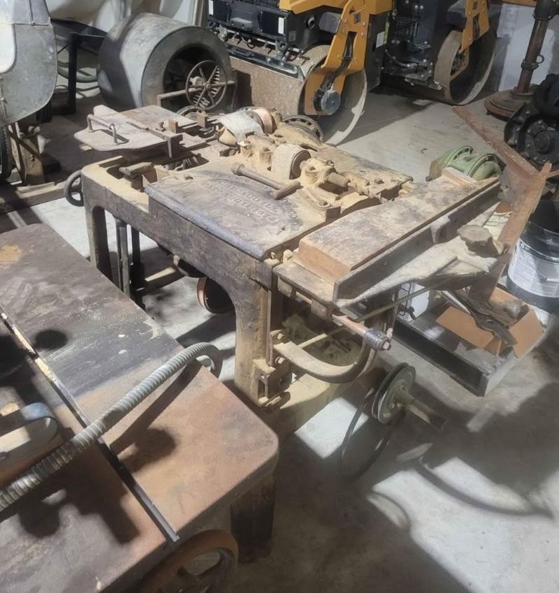
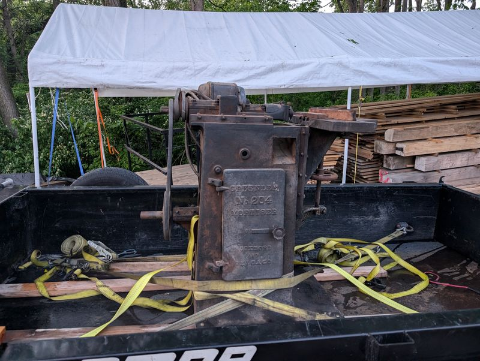
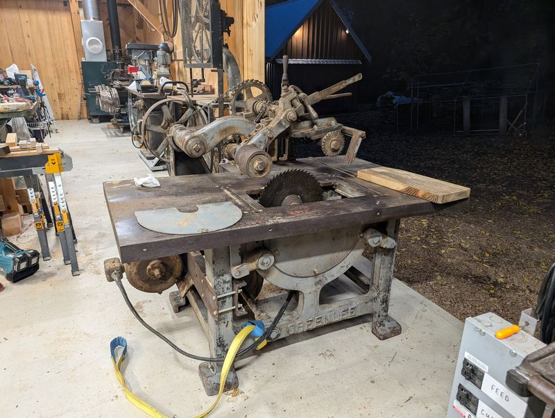
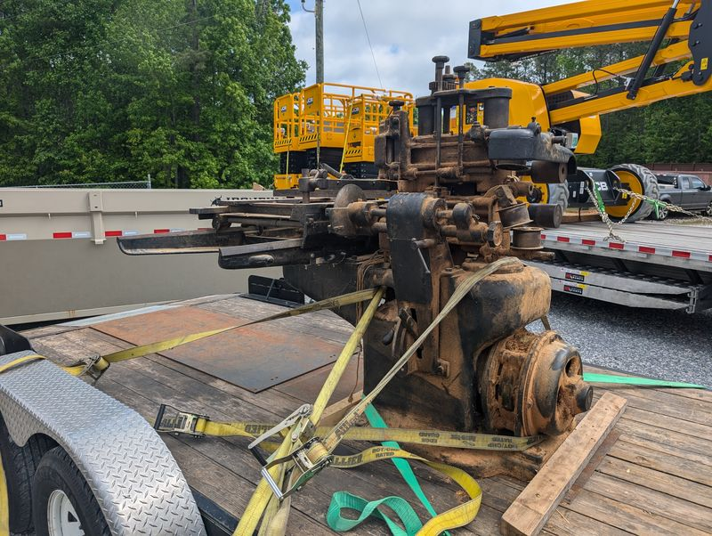
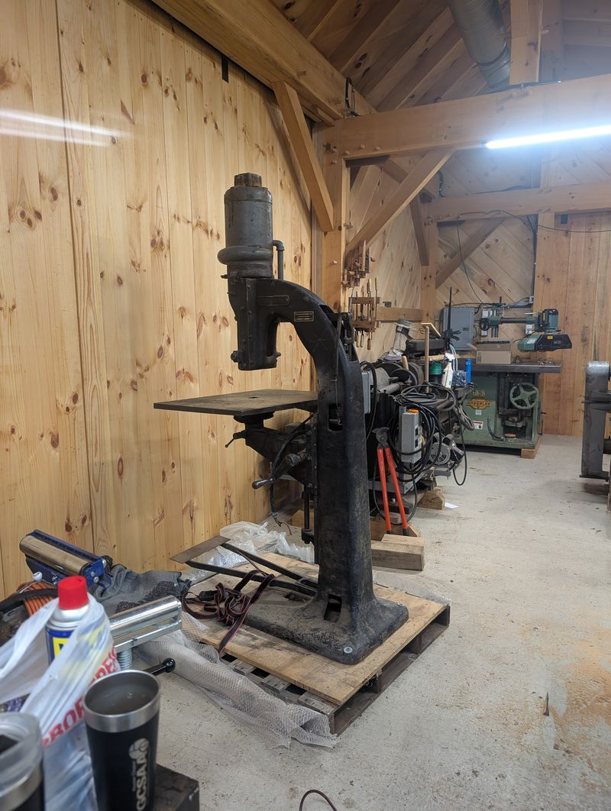
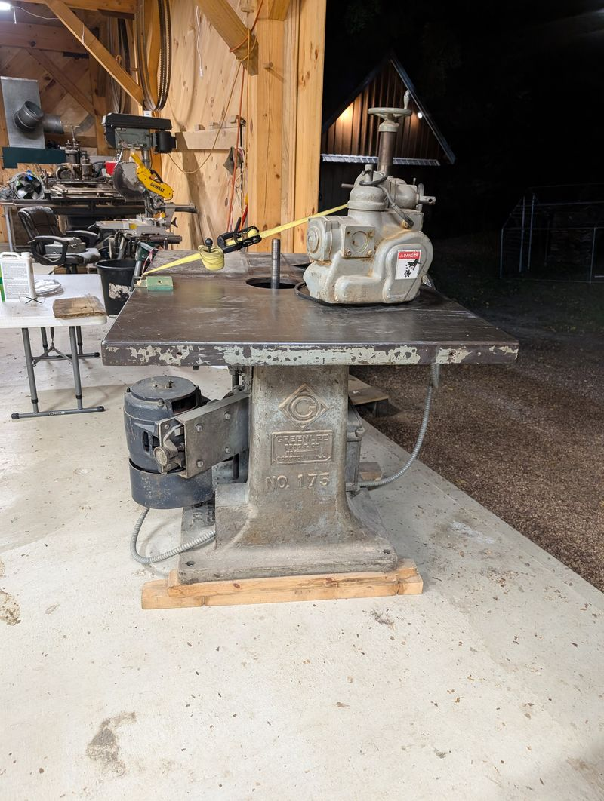
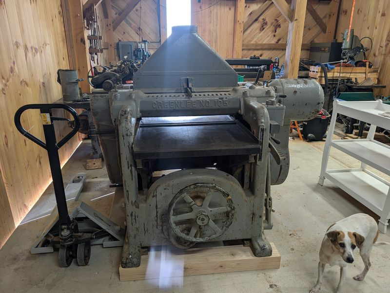
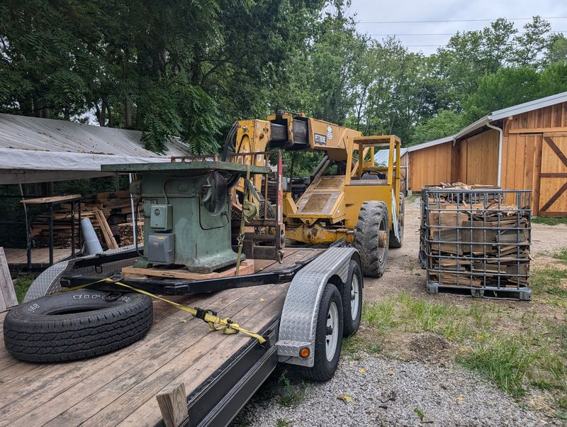

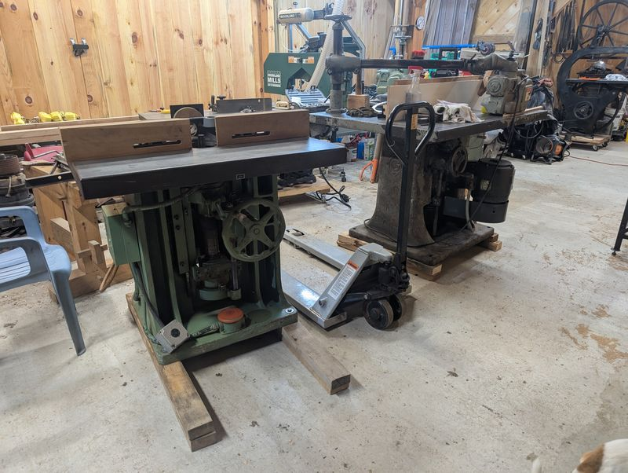
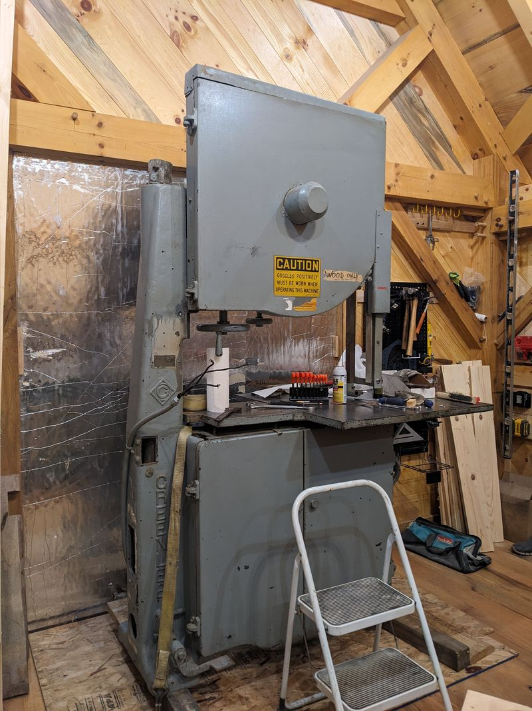
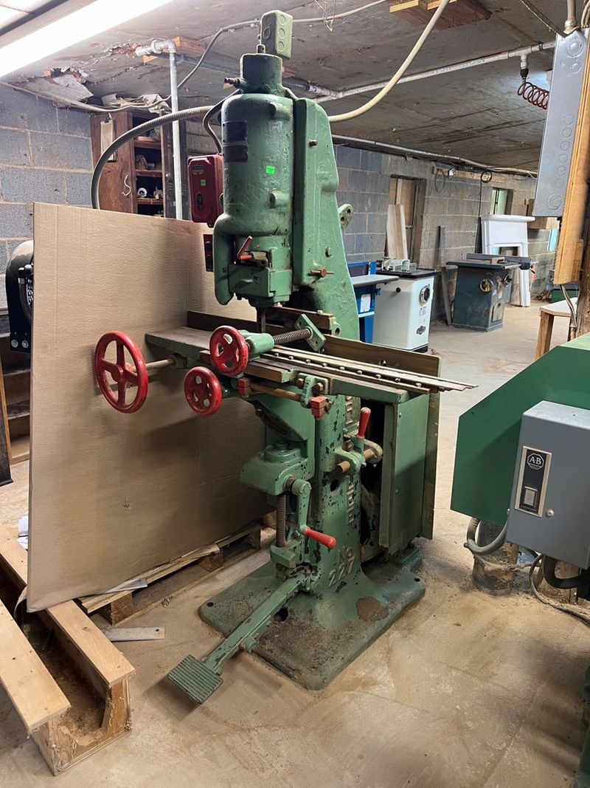
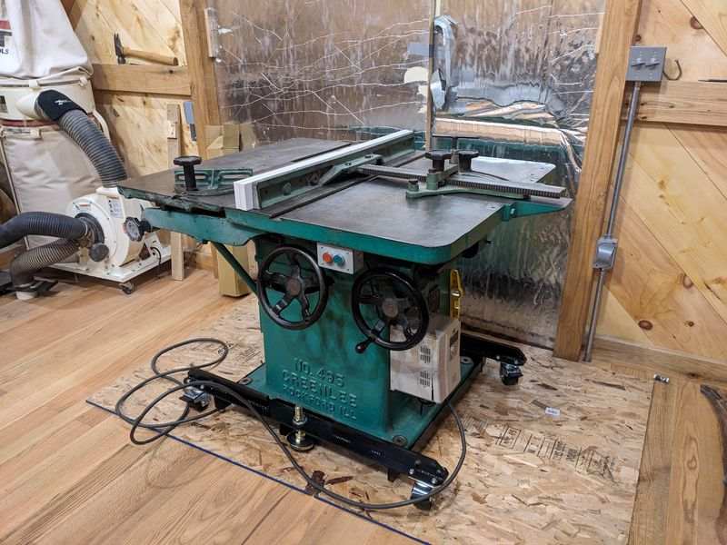
Two Buildings, Built for Iron
You cannot keep a working museum in a garage. The collection lives in two timber frame buildings raised the old way — heavy posts, pegged joints, room for machines to run.